Chapter8 Week 8: Comparing two means (t-tests)
This week we focus on comparing two means. This can be the means of an outcome variable collected in two discrete groups (e.g., first-year and second-year students) or the same group across two time points (e.g., pre-test and post-test).
The following contains a number of demos to illustrate how and when we would use t-tests.
8.1 Demo 1 - Comparing salary data for chemical engineering and environmental engineering
First, let’s generate some data so that we know the underlying data-generating process that we use statistical tests to characterize.
We’ll have a sample of 100 participants.
N <- 100
student_id <- seq(N)
group_size <- N/2
chem_eng_df <- tibble(id = seq(group_size),
salary = round(rnorm(n = group_size, mean = 75000, sd = 3000), 2),
discipline = "chemical")
chem_eng_df %>%
ggplot(aes(x= salary)) +
geom_histogram(color = "white") +
theme_bw()## `stat_bin()` using `bins = 30`. Pick better value with `binwidth`.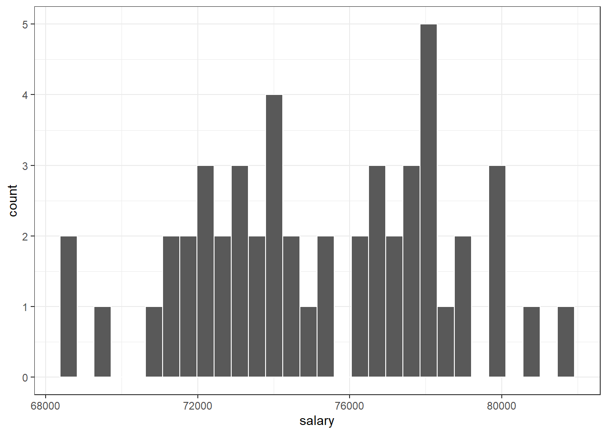
env_eng_df <- tibble(id = seq(group_size),
salary = round(rnorm(n = group_size, mean = 65000, sd = 4000), 2),
discipline = "environmental")
env_eng_df %>%
ggplot(aes(x= salary)) +
geom_histogram(color = "white") +
theme_bw()## `stat_bin()` using `bins = 30`. Pick better value with `binwidth`.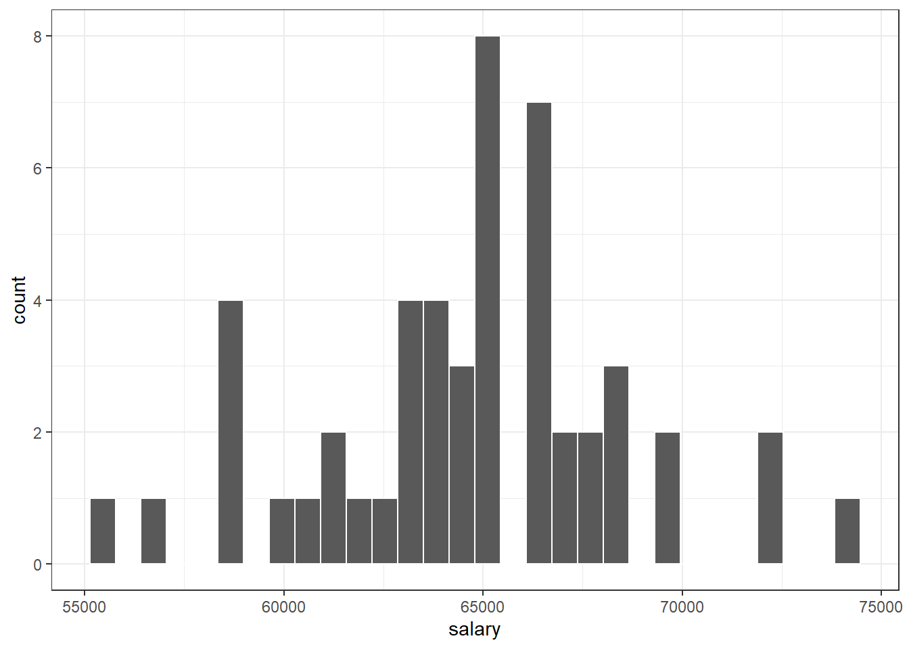
Combine the two disciplinary dataframes together.
salary_comb_long <- bind_rows(chem_eng_df, env_eng_df)
salary_comb_long %>%
ggplot(aes(x = salary, fill = discipline)) +
geom_histogram(alpha = 0.2, position = "identity")## `stat_bin()` using `bins = 30`. Pick better value with `binwidth`.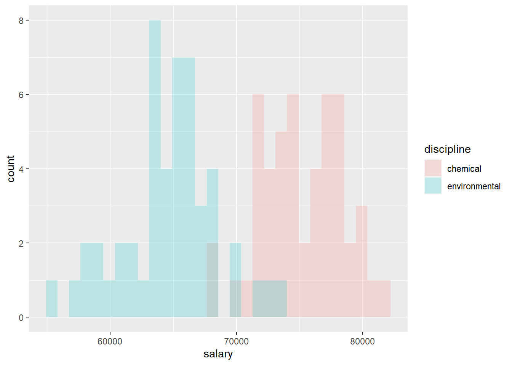
Independent samples t-test using the long format approach (NB: the long format is a good practice - it keeps the grouping variable in one column and the continuous outcome variable in a separate column).
salary_test <- t.test(salary ~ discipline, data = salary_comb_long, paired = FALSE)
salary_test##
## Welch Two Sample t-test
##
## data: salary by discipline
## t = 14.982, df = 95.279, p-value < 2.2e-16
## alternative hypothesis: true difference in means is not equal to 0
## 95 percent confidence interval:
## 9159.492 11957.530
## sample estimates:
## mean in group chemical mean in group environmental
## 75218.01 64659.50Use the tidy() function from the broom package to generate a tibble with the output of the t.test().
tidy(salary_test)## # A tibble: 1 x 10
## estimate estimate1 estimate2 statistic p.value parameter conf.low conf.high
## <dbl> <dbl> <dbl> <dbl> <dbl> <dbl> <dbl> <dbl>
## 1 10559. 75218. 64659. 15.0 8.65e-27 95.3 9159. 11958.
## # ... with 2 more variables: method <chr>, alternative <chr>Remember that a t-test is similar to a linear regression model with a binary predictor variable and continuous outcome variable.
In this case, the model is something like \(salary_i = \beta_0 + \beta_1 * discipline_i\)
Notice how the value of the t-statistic (t value in the linear model summary table) is close to the t value calculated with the t-test!
salary_lm <- lm(salary ~ discipline, data = salary_comb_long)
summary(salary_lm)##
## Call:
## lm(formula = salary ~ discipline, data = salary_comb_long)
##
## Residuals:
## Min 1Q Median 3Q Max
## -9496.0 -2100.7 239.4 2288.4 9202.1
##
## Coefficients:
## Estimate Std. Error t value Pr(>|t|)
## (Intercept) 75218.0 498.3 150.94 <2e-16 ***
## disciplineenvironmental -10558.5 704.7 -14.98 <2e-16 ***
## ---
## Signif. codes: 0 '***' 0.001 '**' 0.01 '*' 0.05 '.' 0.1 ' ' 1
##
## Residual standard error: 3524 on 98 degrees of freedom
## Multiple R-squared: 0.6961, Adjusted R-squared: 0.693
## F-statistic: 224.5 on 1 and 98 DF, p-value: < 2.2e-16Calculate the effect size of discipline on salary.
(t <- salary_test$statistic[[1]]) # wrapping this in parentheses prints out the value of t at the same time that it stores the value of t## [1] 14.98229(df <- salary_test$parameter[[1]])## [1] 95.27933(r <- sqrt(t^2/(t^2 + df)))## [1] 0.8378649round(r,3)## [1] 0.838r^2## [1] 0.7020177We now have the results of an independent samples t-test and the effect size.
Think about what would happen if we changed the sample size or if we changed the underlying distributions that we used to generate the salary data.
We can also run the t-test using a wide format approach
salary_comb_wide <- salary_comb_long %>%
pivot_wider(names_from = discipline, values_from = salary)salary_test_2 <- t.test(salary_comb_wide$chemical, salary_comb_wide$environmental, paired = FALSE)
salary_test_2##
## Welch Two Sample t-test
##
## data: salary_comb_wide$chemical and salary_comb_wide$environmental
## t = 14.982, df = 95.279, p-value < 2.2e-16
## alternative hypothesis: true difference in means is not equal to 0
## 95 percent confidence interval:
## 9159.492 11957.530
## sample estimates:
## mean of x mean of y
## 75218.01 64659.508.2 Demo 2 - Student SAT scores
Let’s try a second example. This time we’ll simulate data we might have where a dependent samples t-test would be appropriate.
We are going to simulate the scenario where we have student SAT scores on both the verbal section and math section.
samp_size <- 1000
student_id <- seq(samp_size)
sat_verbal <- round(rnorm(n = samp_size, mean = 620, sd = 55), 0)
sat_math <- round(rnorm(n = samp_size, mean = 700, sd = 40), 0)
sat_verbal_capped <- modify(.x = sat_verbal, .f = ~ min(800, .x))
sat_math_capped <- modify(.x = sat_math, .f = ~min(800, .x))
sat_df <- tibble(id = student_id,
verbal = sat_verbal_capped,
math = sat_math_capped)
sat_df %>% ggplot(aes(x = verbal)) +
geom_histogram() +
labs(title = "Simulated SAT Verbal Histogram",
x = "Verbal Score",
y = "Count")## `stat_bin()` using `bins = 30`. Pick better value with `binwidth`.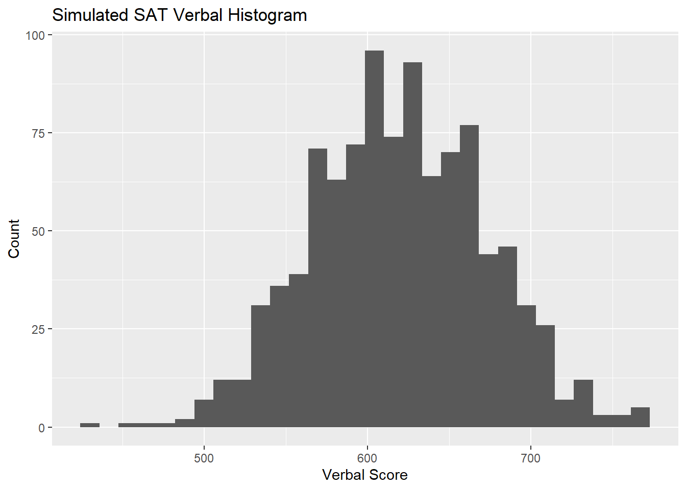
sat_df %>% ggplot(aes(x = math)) +
geom_histogram() +
labs(title = "Simulated SAT Math Histogram",
x = "Math Score",
y = "Count")## `stat_bin()` using `bins = 30`. Pick better value with `binwidth`.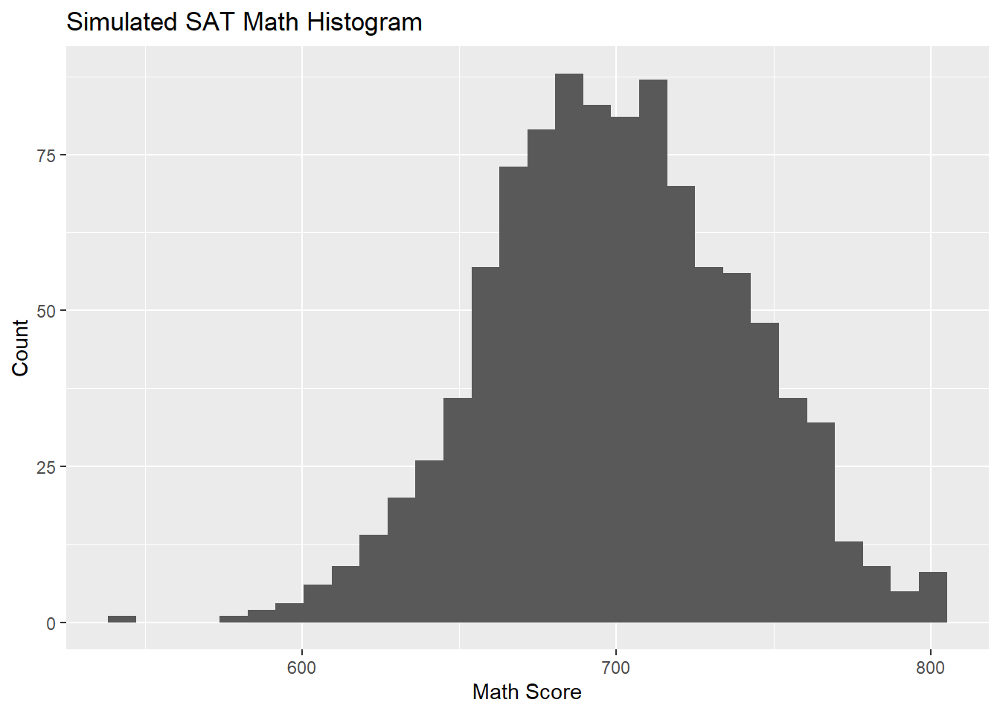
Alternatively, we could plot these together by either making a long data set or just overlaying histograms and modifying transparency (the alpha parameter).
sat_df %>% ggplot() +
geom_histogram(aes(x = math, fill = "red"), alpha = 0.2) +
labs(title = "Simulated SAT Scores Histogram",
x = "SAT Score",
y = "Count") +
geom_histogram(aes(x = verbal, fill = "blue"), alpha = 0.2) +
scale_fill_manual(name = "Category", values = c("blue", "red"), labels = c("verbal", "math"))## `stat_bin()` using `bins = 30`. Pick better value with `binwidth`.
## `stat_bin()` using `bins = 30`. Pick better value with `binwidth`.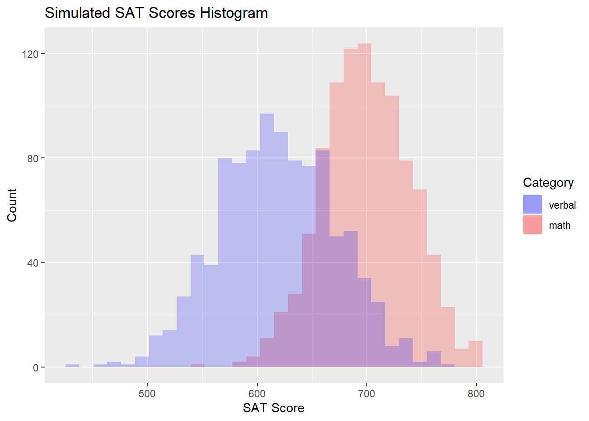
Looking at the histogram, we can see that there appears to be a systematic difference in the scores. Running a t-test will help us see if that initial observation is statistically correct.
Since we will be comparing verbal and math scores for each student, this will be a dependent samples (or paired samples) t-test.
sat_t_test <- t.test(sat_df$verbal, sat_df$math, paired = TRUE) # don't forget to add: paired = TRUE
# now look at the results
sat_t_test##
## Paired t-test
##
## data: sat_df$verbal and sat_df$math
## t = -38.699, df = 999, p-value < 2.2e-16
## alternative hypothesis: true difference in means is not equal to 0
## 95 percent confidence interval:
## -84.23739 -76.10661
## sample estimates:
## mean of the differences
## -80.172We see there was a statistically significant difference, but now let’s try changing the distributions and see what happens.
First, we’ll change make the means very close together and see how sensitive the test is to that
samp_size <- 1000
student_id_2 <- seq(samp_size)
sat_verbal_2 <- round(rnorm(n = samp_size, mean = 690, sd = 55), 0)
sat_math_2 <- round(rnorm(n = samp_size, mean = 700, sd = 40), 0)
# let's cap the simulated scores at 800
sat_verbal_2_capped <- modify(.x = sat_verbal_2, .f = ~ min(800, .x))
sat_math_2_capped <- modify(.x = sat_math_2, .f = ~min(800, .x))
sat_df_2 <- tibble(id = student_id,
verbal = sat_verbal_2_capped,
math = sat_math_2_capped)
sat_df_2 %>% ggplot(aes(x = verbal)) +
geom_histogram() +
labs(title = "Simulated SAT Verbal Histogram",
x = "Verbal Score",
y = "Count")## `stat_bin()` using `bins = 30`. Pick better value with `binwidth`.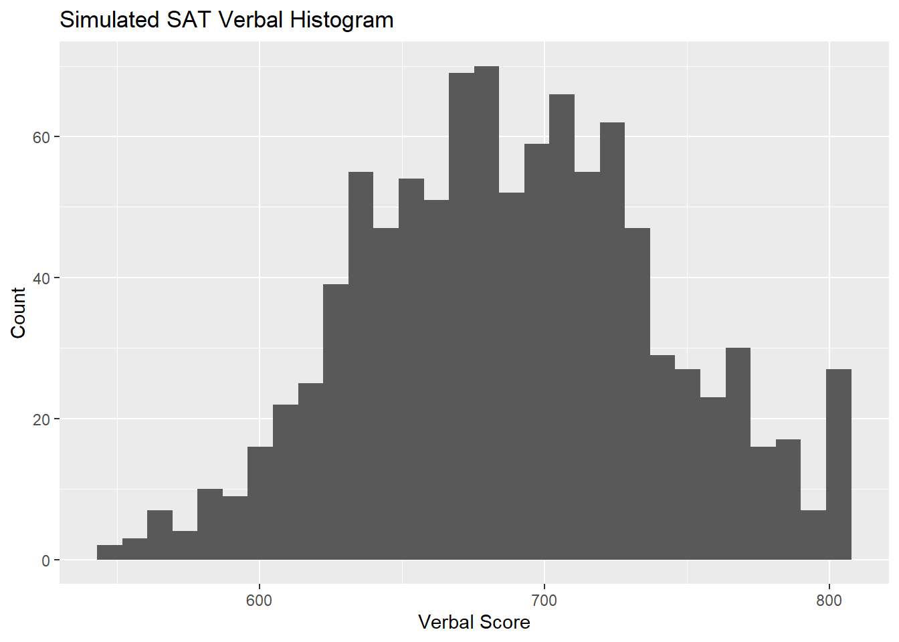
sat_df_2 %>% ggplot(aes(x = math)) +
geom_histogram() +
labs(title = "Simulated SAT Math Histogram",
x = "Math Score",
y = "Count")## `stat_bin()` using `bins = 30`. Pick better value with `binwidth`.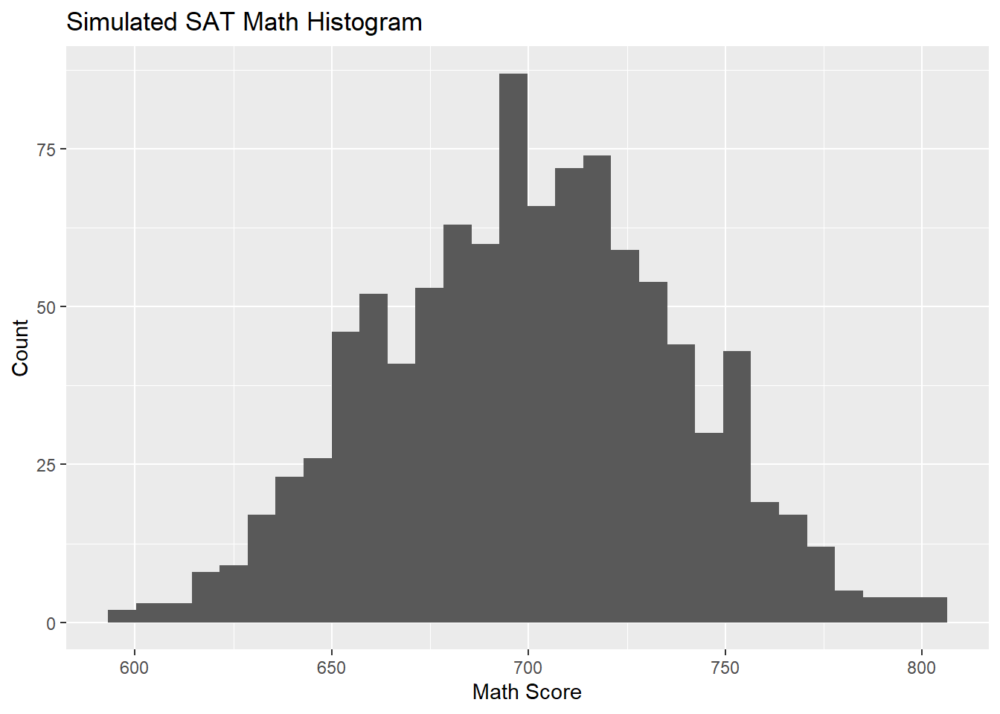
Alternatively, we could plot these together by either making a long data set or just overlaying histograms and modifying transparency (the alpha parameter).
sat_df_2 %>% ggplot() +
geom_histogram(aes(x = math, fill = "red"), alpha = 0.2) +
labs(title = "Simulated SAT Scores Histogram",
x = "SAT Score",
y = "Count") +
geom_histogram(aes(x = verbal, fill = "blue"), alpha = 0.2) +
scale_fill_manual(name = "Category", values = c("blue", "red"), labels = c("verbal", "math"))## `stat_bin()` using `bins = 30`. Pick better value with `binwidth`.
## `stat_bin()` using `bins = 30`. Pick better value with `binwidth`.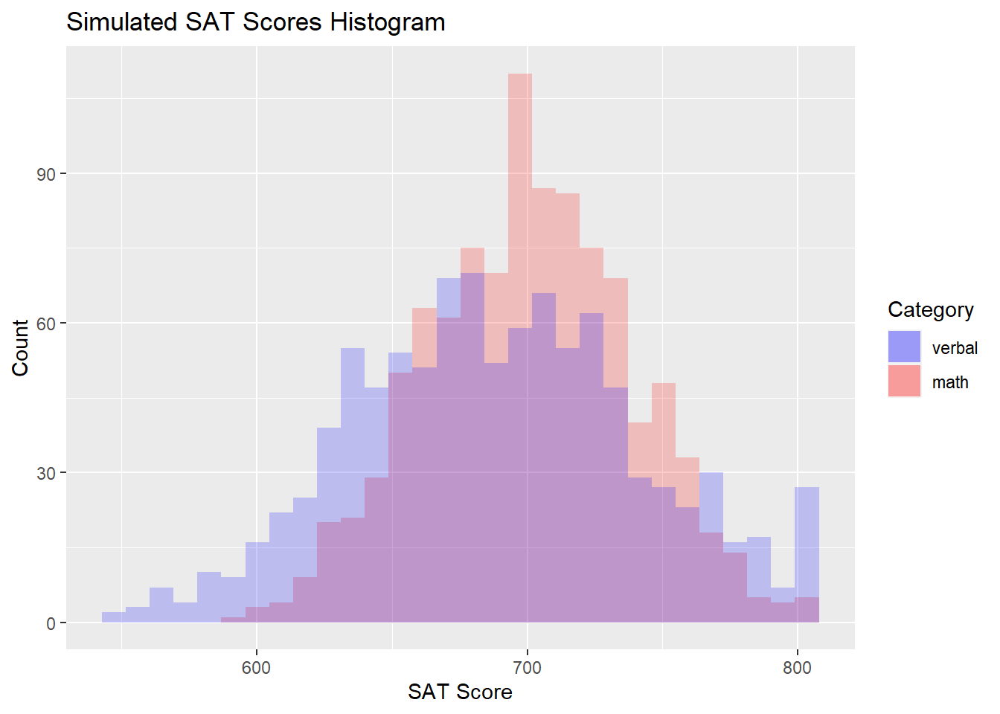
Looking at the histogram, we can see that there appears to be a systematic difference in the scores. Running a t-test will help us see if that initial observation is statistically correct.
Since we will be comparing verbal and math scores for each student, this will be a dependent samples (or paired samples) t-test
sat_t_test_2 <- t.test(sat_df_2$verbal, sat_df_2$math, paired = TRUE) # don't forget to add: paired = TRUE
# now look at the results
sat_t_test_2##
## Paired t-test
##
## data: sat_df_2$verbal and sat_df_2$math
## t = -5.7463, df = 999, p-value = 1.21e-08
## alternative hypothesis: true difference in means is not equal to 0
## 95 percent confidence interval:
## -15.724989 -7.719011
## sample estimates:
## mean of the differences
## -11.722Let’s try a third test - this time we’ll change the sample size to be 25 students rather than 1000
samp_size <- 25
student_id_3 <- seq(samp_size)
sat_verbal_3 <- round(rnorm(n = samp_size, mean = 690, sd = 55), 0)
sat_math_3 <- round(rnorm(n = samp_size, mean = 700, sd = 40), 0)
# cap the scores at 800
sat_verbal_3_capped <- modify(.x = sat_verbal_3, .f = ~ min(800, .x))
sat_math_3_capped <- modify(.x = sat_math_3, .f = ~min(800, .x))
sat_df_3 <- tibble(id = student_id_3,
verbal = sat_verbal_3_capped,
math = sat_math_3_capped)
sat_df_3 %>% ggplot(aes(x = verbal)) +
geom_histogram() +
labs(title = "Simulated SAT Verbal Histogram",
x = "Verbal Score",
y = "Count")## `stat_bin()` using `bins = 30`. Pick better value with `binwidth`.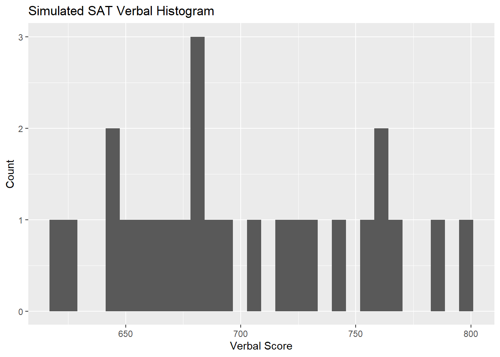
sat_df_3 %>% ggplot(aes(x = math)) +
geom_histogram() +
labs(title = "Simulated SAT Math Histogram",
x = "Math Score",
y = "Count")## `stat_bin()` using `bins = 30`. Pick better value with `binwidth`.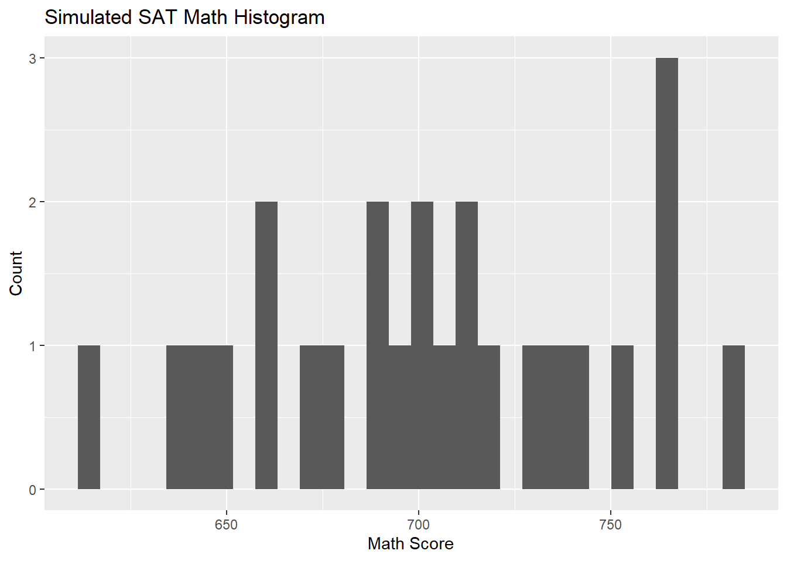
Alternatively, we could plot these together by either making a long data set or just overlaying histograms and modifying transparency (the alpha parameter)
sat_df_3 %>% ggplot() +
geom_histogram(aes(x = math, fill = "red"), alpha = 0.2) +
labs(title = "Simulated SAT Scores Histogram",
x = "SAT Score",
y = "Count") +
geom_histogram(aes(x = verbal, fill = "blue"), alpha = 0.2) +
scale_fill_manual(name = "Category", values = c("blue", "red"), labels = c("verbal", "math"))## `stat_bin()` using `bins = 30`. Pick better value with `binwidth`.
## `stat_bin()` using `bins = 30`. Pick better value with `binwidth`.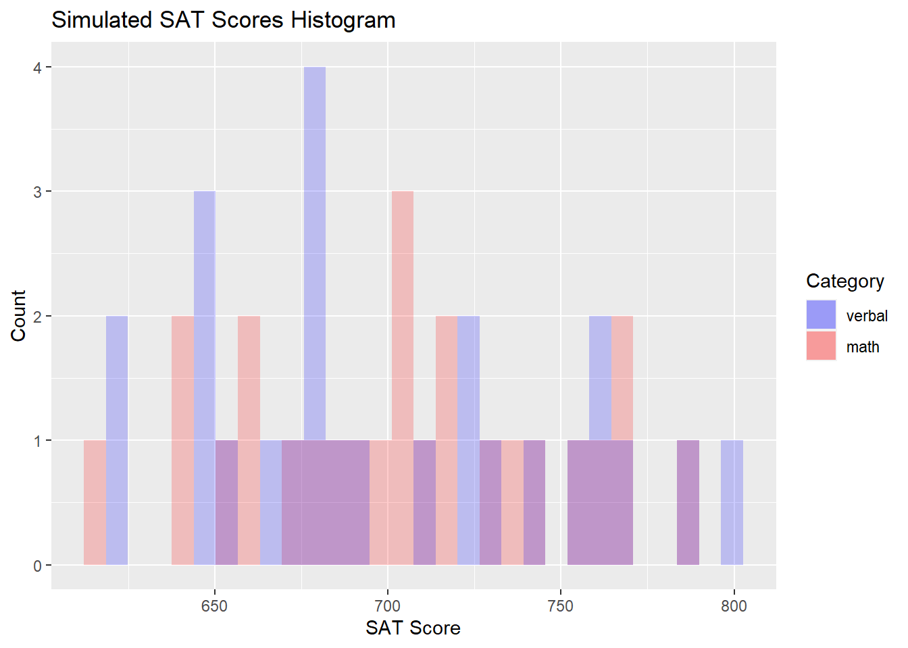
Looking at the histogram, we can see that there appears to be a systematic difference in the scores. Running a t-test will help us see if that initial observation is statistically correct.Since we will be comparing verbal and math scores for each student, this will be a dependent samples (or paired samples) t-test
sat_t_test_3 <- t.test(sat_df_3$verbal, sat_df_3$math, paired = TRUE) # don't forget to add: paired = TRUE
# now look at the results
sat_t_test_3##
## Paired t-test
##
## data: sat_df_3$verbal and sat_df_3$math
## t = -0.14479, df = 24, p-value = 0.8861
## alternative hypothesis: true difference in means is not equal to 0
## 95 percent confidence interval:
## -30.50846 26.50846
## sample estimates:
## mean of the differences
## -2Now we see that the statistically significant difference is gone. How about if we go back to having a large difference in the means
samp_size <- 25
student_id_4 <- seq(samp_size)
sat_verbal_4 <- round(rnorm(n = samp_size, mean = 620, sd = 55), 0)
sat_math_4 <- round(rnorm(n = samp_size, mean = 700, sd = 40), 0)
#cap the scores at 800
sat_verbal_4_capped <- modify(.x = sat_verbal_4, .f = ~ min(800, .x))
sat_math_4_capped <- modify(.x = sat_math_4, .f = ~min(800, .x))
sat_df_4 <- tibble(id = student_id_4,
verbal = sat_verbal_4_capped,
math = sat_math_4_capped)
# visualize the distributions of scores
sat_df_4 %>% ggplot(aes(x = verbal)) +
geom_histogram() +
labs(title = "Simulated SAT Verbal Histogram",
x = "Verbal Score",
y = "Count")## `stat_bin()` using `bins = 30`. Pick better value with `binwidth`.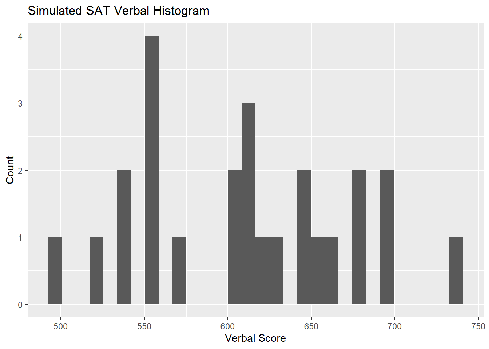
sat_df_4 %>% ggplot(aes(x = math)) +
geom_histogram() +
labs(title = "Simulated SAT Math Histogram",
x = "Math Score",
y = "Count")## `stat_bin()` using `bins = 30`. Pick better value with `binwidth`.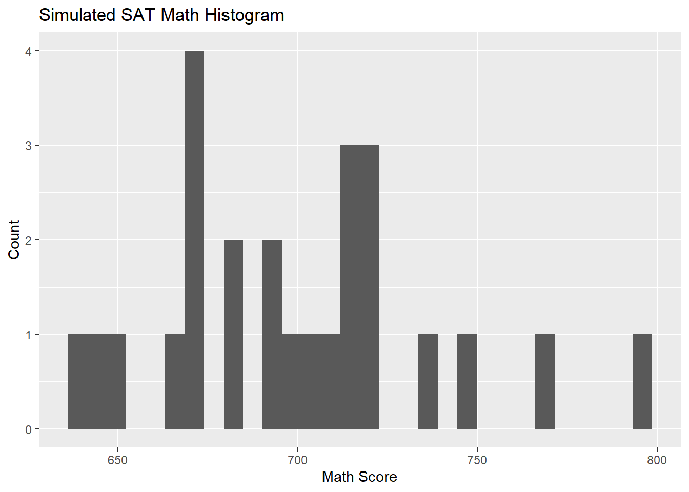
Alternatively, we could plot these together by either making a long data set or just overlaying histograms and modifying transparency (the alpha parameter)
sat_df_4 %>% ggplot() +
geom_histogram(aes(x = math, fill = "red"), alpha = 0.2) +
labs(title = "Simulated SAT Scores Histogram",
x = "SAT Score",
y = "Count") +
geom_histogram(aes(x = verbal, fill = "blue"), alpha = 0.2) +
scale_fill_manual(name = "Category", values = c("blue", "red"), labels = c("verbal", "math"))## `stat_bin()` using `bins = 30`. Pick better value with `binwidth`.
## `stat_bin()` using `bins = 30`. Pick better value with `binwidth`.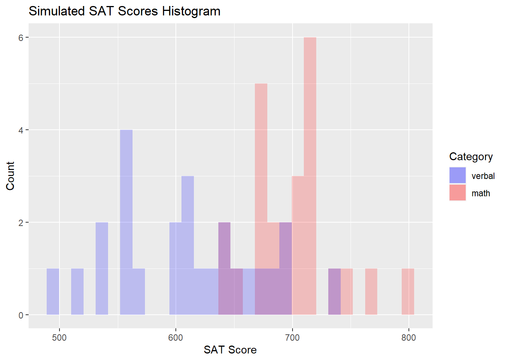
Looking at the histogram, we can see that there appears to be a systematic difference in the scores. Running a t-test will help us see if that initial observation is statistically correct. Since we will be comparing verbal and math scores for each student, this will be a dependent samples (or paired samples) t-test
sat_t_test_4 <- t.test(sat_df_4$math, sat_df_4$verbal, paired = TRUE) # don't forget to add: paired = TRUE
# now look at the results
sat_t_test_4##
## Paired t-test
##
## data: sat_df_4$math and sat_df_4$verbal
## t = 7.1392, df = 24, p-value = 2.226e-07
## alternative hypothesis: true difference in means is not equal to 0
## 95 percent confidence interval:
## 63.8111 115.7089
## sample estimates:
## mean of the differences
## 89.76We should see that the t-test will pick up differences between means if there is a sufficiently large difference.